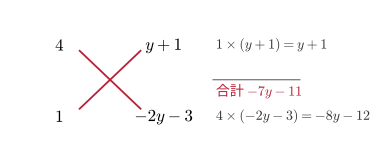

別冊章末問題の解答
1. \(2x^2+xy-3y^2+3x+7y-2\) を因数分解せよ。
\(y\) を数と同じように扱い、\(x^2\)、\(x\)、\(x\) を含まない項に分ける。
\[2x^2+xy-3y^2+3x+7y-2=2x^2+(y+3)x+(-3y^2+7y-2)\]確かめ：
\[(3y-1)(-y+2)=-3y^2+6y+y-2=-3y^2+7y-2\]
左の列は \(2,\ 1\)、右の列は \(3y-1,\ -y+2\)。たすきにかけて足すと、
\[2\cdot(-y+2)+1\cdot(3y-1)=-2y+4+3y-1=y+3\]これは \(x\) の係数と一致するので、たすき掛けは成功。
（例題1の型）
【答案】
\[(2x+3y-1)(x-y+2)\]答
2. \(a(b+c)^2+b(c+a)^2+c(a+b)^2-4abc\) を因数分解せよ。
かっこをはずす：
\[a(b^2+2bc+c^2)+b(c^2+2ca+a^2)+c(a^2+2ab+b^2)-4abc\]\[=ab^2+2abc+ac^2+bc^2+2abc+a^2b+a^2c+2abc+b^2c-4abc\]\(abc\) の項は \(2abc+2abc+2abc-4abc=2abc\)。
\[=a^2b+a^2c+ab^2+ac^2+b^2c+bc^2+2abc\]\(a\) について整理する：
\[(b+c)a^2+(b^2+2bc+c^2)a+(b^2c+bc^2)=(b+c)a^2+(b+c)^2a+bc(b+c)\]\[=(b+c)\{a^2+(b+c)a+bc\}=(a+b)(b+c)(c+a)\]（例題2の型）
【答案】
\[(a+b)(b+c)(c+a)\]答
3. \((x+1)(x+3)(x+5)(x+7)+15\) を因数分解せよ。
\((x+1)(x+7)=x^2+8x+7\)、\((x+3)(x+5)=x^2+8x+15\)。\(x^2+8x=t\) とおくと
\[(t+7)(t+15)+15=t^2+22t+105+15=t^2+22t+120\]かけて120・足して22になる2数は \(10,\ 12\)。
\[t^2+22t+120=(t+10)(t+12)\]もどして
\[(x^2+8x+10)(x^2+8x+12)\]\(x^2+8x+12=(x+2)(x+6)\) なので
\[(x+2)(x+6)(x^2+8x+10)\]（例題3の型）
【答案】
\[(x+2)(x+6)(x^2+8x+10)\]答
4. \(x^4+4y^4\) を因数分解せよ。
\((x^2+2y^2)^2=x^4+4x^2y^2+4y^4\)。\(4x^2y^2\) を足して引く。
\[x^4+4y^4=(x^4+4x^2y^2+4y^4)-4x^2y^2=(x^2+2y^2)^2-(2xy)^2\]\[=(x^2+2y^2+2xy)(x^2+2y^2-2xy)=(x^2+2xy+2y^2)(x^2-2xy+2y^2)\]（例題4の型）
【答案】
\[(x^2+2xy+2y^2)(x^2-2xy+2y^2)\]答
5. \(xy-4x-3y=0\) をみたす自然数 \(x,\ y\) の組 \((x,\ y)\) をすべて求めよ。
\((x-3)(y-4)=xy-4x-3y+12\) より \((x-3)(y-4)=12\)。\(x-3\geqq-2\)、\(y-4\geqq-3\)。
| \(x-3\) | \(y-4\) | \((x,y)\) | 判定 |
|---|---|---|---|
| 1 | 12 | (4, 16) | ○ |
| 2 | 6 | (5, 10) | ○ |
| 3 | 4 | (6, 8) | ○ |
| 4 | 3 | (7, 7) | ○ |
| 6 | 2 | (9, 6) | ○ |
| 12 | 1 | (15, 5) | ○ |
| −1 | −12 | (2, −8) | × |
| −2 | −6 | (1, −2) | × |
| −3 | −4 | (0, 0) | × |
| −4 | −3 | (−1, 1) | × |
| −6 | −2 | (−3, 2) | × |
| −12 | −1 | (−9, 3) | × |
（例題5の型）
【答案】
\[(4,16),\ (5,10),\ (6,8),\ (7,7),\ (9,6),\ (15,5)\]答
6. \(4x^2-7xy-2y^2-11x-5y-3\) を因数分解せよ。
\(y\) を数と同じように扱い、\(x^2\)、\(x\)、\(x\) を含まない項に分ける。
\[4x^2-7xy-2y^2-11x-5y-3=4x^2+(-7y-11)x+(-2y^2-5y-3)\]確かめ：
\[(y+1)(-2y-3)=-2y^2-3y-2y-3=-2y^2-5y-3\]
左の列は \(4,\ 1\)、右の列は \(y+1,\ -2y-3\)。たすきにかけて足すと、
\[4\cdot(-2y-3)+1\cdot(y+1)=-8y-12+y+1=-7y-11\]これは \(x\) の係数と一致するので、たすき掛けは成功。
（例題1の型）
【答案】
\[(4x+y+1)(x-2y-3)\]答